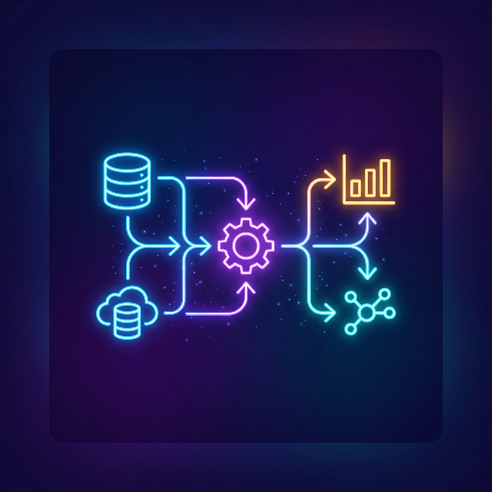

Analista de datos con experiencia en extracción, transformación y visualización de datos para soporte a la toma de decisiones. Competente en SQL, Power BI, Excel y Python, con capacidad para traducir necesidades de negocio en dashboards accionables e informes claros.
